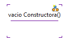
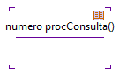
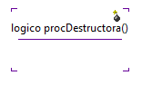
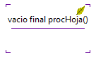
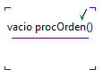

Este perfil indica al responsable de
traducir a un determinado lenguaje los requerimientos de un sistema de
software. Este perfil se aplica principalmente en identificación
de operaciones como patrones de programación.
El perfíl permite adicionar las siguientes etiquetas en el diagrama de
marcos:
- Operación Constructora: Esta
operación es utilizada para inicializar estados. La Figura 1 muestra la representación de una Operación Constructora en Coloso.

Figura 1. Operacón de Constructora
- Operación Consultora: Operación para
la consulta de datos, representada como se muestra en la Figura 2.

Figura 2. Operacón de Consultora
- Operación Destructora: Señala una
operación destinada para la liberación de recursos. La Figura 3 muestra su representación.

Figura 3. Operacón de Destructora
- Operación
Hoja: Esta es una operación que no acepta sobrecarga semántica. La Figura 4 muestra su representación.

Figura 4. Operacón Hoja
- Operación
Orden: Esta operación modifica datos al interior de estructuras
o clases, como se muestra en la Figura 5.

Figura 5. Operacón Orden